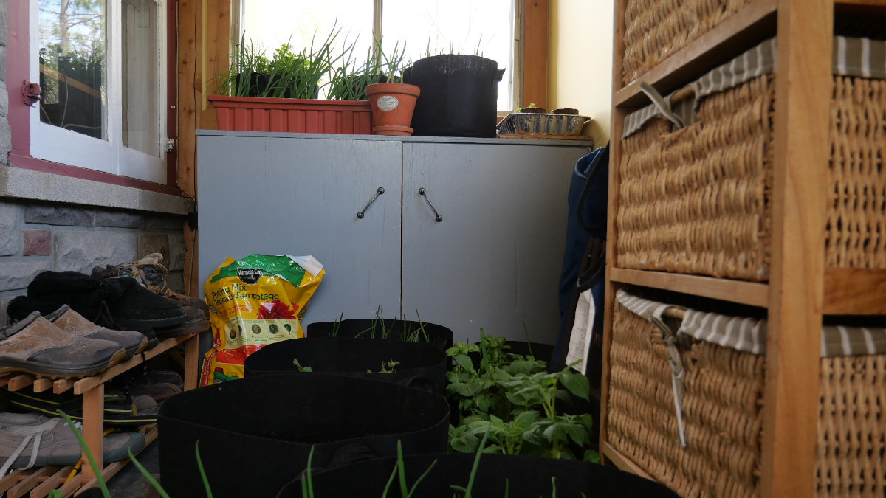

Cette nuit encore — la nuit du 3 au 4 mai — j'ai rentré mes plants sur avis de gel au sol. Ce matin : +4 °C. Quatre degrés au-dessus du point de gel. Trois voyages inutiles en autant de jours, mes tomates et mon basilic entassés dans l'entrée pour rien. Ce n'est pas de la malchance — c'est le signe que quelque chose cloche dans la chaîne de prévisions météo.

Ce quelque chose a un nom : la NOAA.
Une infrastructure colossale en démantèlement
La NOAA — National Oceanic and Atmospheric Administration — c'est l'agence américaine qui chapeaute le service météo national des États-Unis. Douze mille employés, des satellites, des milliers de stations au sol, des ballons-sondes lancés deux fois par jour. Une infrastructure colossale dont dépend toute la météorologie nord-américaine, Canada inclus.
Depuis le début 2025, cette infrastructure est en train de se faire démanteler. Plus de 1 300 employés mis à la porte, des stations sous-staffées qui n'envoient plus leurs ballons-sondes, des données satellitaires abandonnées. Un expert canadien estime qu'à certains moments, 15 à 20 % des stations américaines ne transmettent plus leurs données.
Et la météo, ça ne connaît pas les frontières.
Moins de données, moins de précision
Météo Canada ne fabrique pas ses prévisions dans le vide. Les modèles informatiques qui calculent ce qu'il fera demain — ou cette nuit — ingèrent des données de partout : satellites, stations au sol, ballons-sondes, bouées océaniques. Une bonne partie de ces données vient des États-Unis, et une bonne partie de ces données américaines vient de la NOAA.
Moins de données en entrée, c'est moins de précision en sortie. Et les erreurs ne restent pas petites — elles s'accumulent et s'amplifient d'une prévision à l'autre. Un modèle qui rate la température de surface cette nuit va rater la trajectoire de la dépression de demain.
C'est exactement ce qu'on observe. Des avis de gel qui ne se matérialisent pas. Des quantités de neige à côté. Des systèmes de précipitations mal timés. Ce n'est pas Météo Canada qui travaille mal — c'est Météo Canada qui travaille avec moins.
Une question de souveraineté
La situation n'est pas passée inaperçue. Un rapport d'experts canadiens publié en septembre 2025 recommande que le Canada diversifie ses sources de données vers l'Europe pour compenser. On parle de souveraineté météorologique — un concept qui aurait semblé absurde il y a deux ans.
Pour un marin qui planifie une traversée ou un pilote de vol libre qui choisit son créneau de décollage, une prévision ratée n'est pas un inconvénient — c'est un risque réel. La météo a toujours été une science imparfaite, on le sait. Mais il y a une différence entre l'imperfection naturelle des phénomènes atmosphériques et une dégradation artificielle causée par des coupures budgétaires à Washington.
En attendant, sur la Rive-Sud de Montréal, je continue de surveiller mes plants. Mais désormais je vérifie aussi la température réelle dehors avant de faire le voyage. Quatre degrés Celsius, c'est loin du gel — et mon thermomètre de jardin, lui, n'a pas été coupé par DOGE.